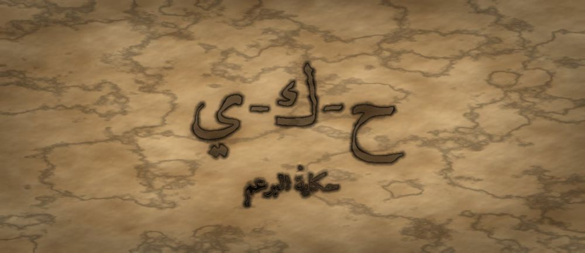

مَطبعةُ جُذور · دبي · MCMXXVI · سِلْسِلَةُ فَنِّ البَيان

مَرحلةُ البُرْعُم · الفئة ٧–٩ · الجذر ح-ك-ي · ابن المقفّع
❦ ✦ ❧
السِّفْرُ ٧ — حكايةُ البرعم
«مَنْ يَمْلِكُ حِكَايَةً يَمْلِكُ طَرِيقًا إِلَى قَلْبِ النَّاسِ»

الرِّسَالَةُ الجَوْهَرِيَّة
الْحِكَايَةُ لَيْسَتْ كَلَامًا كَثِيرًا، بَلْ خَيْطٌ يَجْمَعُ الْكَلَامَ. يَتَعَلَّمُ الطِّفْلُ هُنَا أَنَّ لِكُلِّ حِكَايَةٍ بِدَايَةً تَفْتَحُ، وَعُقْدَةً تَشُدُّ، وَنِهَايَةً تُرِيحُ. وَحِينَ يُرَتِّبُ مَا حَدَثَ لَهُ فِي هَذَا التَّرْتِيبِ، يَفْهَمُ نَفْسَهُ أَوَّلًا، ثُمَّ يَسْتَطِيعُ أَنْ يُفْهِمَ غَيْرَهُ.
بِطَاقَةُ هُوِيَّةِ السِّفْر
| الْمُسْتَوَى / الدَّرَجَة | بُرْعُمٌ يَتَكَلَّمُ — الدَّرَجَةُ الرَّابِعَةُ الْخَاتِمَةُ فِي مَرْحَلَةِ الْبُرْعُمِ |
| الْفِئَةُ الْعُمْرِيَّة | ٧–٩ سَنَوَاتٍ · نِطَاقُ تَدَاخُلٍ يَمْتَدُّ إِلَى ١٠ لِمَنْ يَسْتَمْتِعُ بِالسَّرْدِ |
| الْجَذْرُ الْأَسَاسِيّ | ح – ك – ي · الْحِكَايَةُ: أَنْ أَنْقُلَ مَا رَأَيْتُهُ بِتَرْتِيبٍ يَفْهَمُهُ غَيْرِي |
| أُسْرَةُ الْجَذْر | حِكَايَة · حَكَى · يَحْكِي · حَاكٍ · مَحْكِيّ · حِكَايَات |
| الْمَحَطَّة | الْحِكَايَةُ — أَوَّلُ بِنَاءٍ مُنَظَّمٍ لِلْكَلَامِ الطَّوِيلِ |
| الْمِرْسَاةُ الْحِسِّيَّة | ثَلَاثُ خَرَزَاتٍ فِي خَيْطٍ يُمْسِكُهَا الطِّفْلُ وَاحِدَةً وَاحِدَةً: بِدَايَةٌ، عُقْدَةٌ، نِهَايَةٌ |
| الِاسْتِعَارَة | الْبُرْعُمُ الَّذِي تَعَلَّمَ اللُّطْفَ، يَكْتَشِفُ أَنَّ لِكَلَامِهِ خَيْطًا يُنَظِّمُهُ |
| الشَّخْصِيَّتَانِ الْحَكِيمَتَان | عَبْدُ اللهِ بْنُ الْمُقَفَّعِ (نَاقِلُ كَلِيلَةَ وَدِمْنَةَ) + الْجَدَّةُ رَمْلَة |
| الشَّخْصِيَّةُ الرَّمْزِيَّة | نُورُ الْبُرْعُمِ (نَفْسُهَا مِنَ الْأَسْفَارِ السَّابِقَةِ — تَنْمُو) |
| الشَّخْصِيَّةُ الْمُضَادَّة | الصَّدَى الْمُبَعْثَرُ — رَمْزِيٌّ لَا تَارِيخِيٌّ، يُكَرِّرُ الْكَلِمَاتِ بِلَا تَرْتِيبٍ، ثُمَّ يَتَعَلَّمُ الْخَيْطَ |
| مُؤَشِّرُ الرَّصْدِ الْوَصْفِيّ | يُلَاحَظُ أَنَّهُ يَحْكِي حَادِثَةً قَصِيرَةً بِتَرْتِيبٍ زَمَنِيٍّ يَفْهَمُهُ سَامِعٌ لَمْ يَحْضُرْهَا |
| الْمَجَالُ الْمَهَارِيّ | الْوَعْيُ الِاجْتِمَاعِيُّ — نَقْلُ التَّجْرِبَةِ إِلَى الْآخَرِ |
| الْمَرْجِعُ النَّظَرِيّ | اسْتِرْشَادًا بِـ TRT — نَظَرِيَّةِ الْقِرَاءَةِ الْمَلْمُوسَةِ (لَا ادِّعَاءَ اعْتِمَادٍ) |
صَاحِبُ السِّفْرِ مِنَ التُّرَاث
عَبْدُ اللهِ بْنُ الْمُقَفَّعِ (ت نَحْوَ ١٤٢هـ) كَاتِبٌ وَمُتَرْجِمٌ مِنْ أَعْلَامِ النَّثْرِ الْعَرَبِيِّ فِي الْعَصْرِ الْعَبَّاسِيِّ الْأَوَّلِ، نَقَلَ «كَلِيلَةَ وَدِمْنَةَ» إِلَى الْعَرَبِيَّةِ وَصَاغَهَا صِيَاغَةً أَدَبِيَّةً بَدِيعَةً، وَلَهُ «الْأَدَبُ الْكَبِيرُ» وَ«الْأَدَبُ الصَّغِيرُ». نَسْتَلْهِمُ مِنْهُ هُنَا: أَنَّ الْحِكَايَةَ عَلَى لِسَانِ الْحَيَوَانِ قَدْ تُوصِلُ الْمَعْنَى أَبْعَدَ مِمَّا يُوصِلُهُ الْخِطَابُ الْمُبَاشِرُ.
الشَّخْصِيَّةُ المُضَادَّة — الصَّدَى الْمُبَعْثَرُ — شَخْصِيَّةٌ رَمْزِيَّةٌ لَا تَارِيخِيَّةٌ، يَسْكُنُ الْوَادِيَ وَيَرُدُّ كَلِمَاتِ النَّاسِ مَقْلُوبَةً وَمُتَنَاثِرَةً بِلَا أَوَّلٍ وَلَا آخِرٍ. يَظُنُّ أَنَّ كَثْرَةَ الْكَلَامِ هِيَ الْحِكَايَةُ، ثُمَّ يَتَعَلَّمُ مِنْ نُورَ أَنَّ الْخَيْطَ — لَا الْعَدَدَ — هُوَ مَا يَجْعَلُ الْكَلَامَ يُفْهَمُ.
الجَذْرُ وَأُسْرَتُه
ح-ك-ي — حِكَايَة · حَكَى · يَحْكِي · حَاكٍ · مَحْكِيّ · حِكَايَات
الْجَذْرُ (ح-ك-ي) نَاقِصٌ؛ آخِرُهُ حَرْفُ عِلَّةٍ (الْيَاءُ)، وَلِذَلِكَ تُحْذَفُ لَامُهُ فِي مِثْلِ «حَاكٍ» فِي حَالَتَيِ الرَّفْعِ وَالْجَرِّ وَتَعُودُ فِي «الْحَاكِيَ» عِنْدَ التَّعْرِيفِ وَالنَّصْبِ. وَأَصْلُ الْمَعْنَى فِي «حَكَى» الْمُشَابَهَةُ وَالْمُحَاكَاةُ، وَمِنْهُ صَارَتِ «الْحِكَايَةُ» نَقْلًا لِلْحَدَثِ عَلَى صُورَتِهِ — وَهَذَا يُشْرَحُ لِلْمُعَلِّمِ دُونَ إِثْقَالٍ عَلَى الطِّفْلِ.
القِصَّةُ الكَامِلَة
الْمَشْهَدُ ١ — نُورُ تَرَى شَيْئًا عَجِيبًا وَلَا تَسْتَطِيعُ نَقْلَهُ
فِي فَجْرٍ بَارِدٍ، رَأَتْ نُورُ شَيْئًا لَمْ تَرَهُ مِنْ قَبْلُ: قَطْرَةَ نَدًى تَسْقُطُ عَلَى ظَهْرِ خُنْفُسَاءَ صَغِيرَةٍ، فَتَنْزَلِقُ الْخُنْفُسَاءُ عَلَى الْوَرَقَةِ كَأَنَّهَا تَتَزَحْلَقُ، ثُمَّ تَقِفُ وَتُنَظِّفُ نَفْسَهَا وَتَعُودُ مِنْ جَدِيدٍ. ضَحِكَتْ نُورُ حَتَّى اهْتَزَّتْ. وَحِينَ جَاءَ أَصْدِقَاؤُهَا قَالَتْ لَهُمْ مُتَحَمِّسَةً: «خُنْفُسَاءُ! وَنَدًى! وَهِيَ تَقَعُ! وَبَعْدَ ذَلِكَ الْوَرَقَةُ! وَقَبْلَ ذَلِكَ الْفَجْرُ! وَكَانَتْ تَضْحَكُ — لَا، أَنَا الَّتِي كُنْتُ أَضْحَكُ!» نَظَرَ إِلَيْهَا أَصْدِقَاؤُهَا فِي حَيْرَةٍ، ثُمَّ انْصَرَفُوا وَاحِدًا بَعْدَ وَاحِدٍ. جَلَسَتْ نُورُ حَزِينَةً وَقَالَتْ: «رَأَيْتُ شَيْئًا جَمِيلًا، وَلَمْ أَسْتَطِعْ أَنْ أُعْطِيَهُ لِأَحَدٍ.» جَلَسَتْ عَلَى طَرَفِ الْغُصْنِ وَالْخُنْفُسَاءُ مَا زَالَتْ تَلْعَبُ تَحْتَهَا، وَقَالَتْ فِي نَفْسِهَا: «الصُّورَةُ كُلُّهَا فِي رَأْسِي وَاضِحَةٌ، فَلِمَاذَا تَخْرُجُ مِنْ فَمِي مُبَعْثَرَةً؟» وَكَانَ ذَلِكَ أَوَّلَ يَوْمٍ تَعْرِفُ فِيهِ أَنَّ لِلْكَلَامِ صَنْعَةً تُتَعَلَّمُ.
الْمَشْهَدُ ٢ — الصَّدَى الْمُبَعْثَرُ يَمْلَأُ الْوَادِيَ بِالْكَلَامِ
سَمِعَتْ نُورُ صَوْتًا يَأْتِي مِنَ الْوَادِي، فَاقْتَرَبَتْ. كَانَ الصَّدَى الْمُبَعْثَرُ يَتَكَلَّمُ بِلَا تَوَقُّفٍ: «وَرَقَةٌ! مَطَرٌ! جَدِّي! ثُمَّ لَا! قَبْلَ ذَلِكَ! بَعْدَ ذَلِكَ! خُنْفُسَاءُ! أَيْضًا! وَأَيْضًا!» كَانَتِ الْكَلِمَاتُ كُلُّهَا صَحِيحَةً، لَكِنَّهَا مُتَنَاثِرَةٌ كَحَبَّاتِ خَرَزٍ انْقَطَعَ خَيْطُهَا. قَالَتْ نُورُ: «مَاذَا تَحْكِي؟» قَالَ الصَّدَى مُفْتَخِرًا: «أَنَا أَحْكِي كُلَّ شَيْءٍ! أَنَا أَعْرَفُ الْكَلِمَاتِ فِي الْوَادِي كُلِّهِ! أَقُولُ مِائَةَ كَلِمَةٍ فِي نَفَسٍ وَاحِدٍ!» قَالَتْ نُورُ بِرِفْقٍ — وَقَدْ تَعَلَّمَتِ اللُّطْفَ فِي السِّفْرِ الْمَاضِي: «أَسْمَعُ كَلِمَاتِكَ كُلَّهَا، لَكِنِّي لَا أَعْرِفُ مَاذَا حَدَثَ.» صَمَتَ الصَّدَى لِأَوَّلِ مَرَّةٍ. ثُمَّ قَالَ بِصَوْتٍ خَافِتٍ: «كُلُّ مَنْ يَمُرُّ بِي يُسْرِعُ الْخُطَى. أَنَا أَمْلَأُ الْوَادِيَ كَلَامًا، وَأَبْقَى وَحْدِي.» فَشَعَرَتْ نُورُ بِشَيْءٍ مِنْ نَفْسِهَا فِيهِ، وَلَمْ تَضْحَكْ عَلَيْهِ، بَلْ قَالَتْ: «تَعَالَ مَعِي، أَنَا أَيْضًا أَبْحَثُ عَنْ شَيْءٍ.»
الْمَشْهَدُ ٣ — ابْنُ الْمُقَفَّعِ وَالْجَدَّةُ رَمْلَةُ وَخَرَزَاتُ الْحِكَايَةِ
جَلَسَتِ الْجَدَّةُ رَمْلَةُ وَبِجَانِبِهَا كَاتِبٌ هَادِئٌ يُدْعَى عَبْدَ اللهِ بْنَ الْمُقَفَّعِ، كَانَ يَحْمِلُ دَفْتَرًا فِيهِ حِكَايَاتٌ عَلَى أَلْسِنَةِ الْحَيَوَانِ. أَخْرَجَتِ الْجَدَّةُ خَيْطًا وَثَلَاثَ خَرَزَاتٍ وَقَالَتْ: «خُذِي الْخَيْطَ يَا نُورُ. الْخَرَزَةُ الْأُولَى: أَيْنَ كُنْتِ وَمَتَى؟ وَالثَّانِيَةُ: مَا الَّذِي حَدَثَ فَجْأَةً؟ وَالثَّالِثَةُ: كَيْفَ انْتَهَى الْأَمْرُ؟» قَالَ ابْنُ الْمُقَفَّعِ: «أَنَا لَا أَقُولُ لِلنَّاسِ: كُونُوا حُكَمَاءَ. بَلْ أَقُولُ: كَانَ فِي غَابَةٍ أَسَدٌ وَثَوْرٌ... فَيَدْخُلُ الْمَعْنَى مِنْ بَابِ الْحِكَايَةِ وَهُوَ مُبْتَسِمٌ.» أَمْسَكَتْ نُورُ الْخَرَزَةَ الْأُولَى بِأَصَابِعِهَا، وَشَعَرَتْ بِبَرْدِهَا الْمُسْتَدِيرِ، وَقَالَتْ: «إِذَنْ لِلْكَلَامِ خَيْطٌ.» قَالَتِ الْجَدَّةُ: «وَمَنْ فَقَدَ الْخَيْطَ تَنَاثَرَ كَلَامُهُ.» ثُمَّ أَخَذَ ابْنُ الْمُقَفَّعِ الْخَيْطَ وَعَقَدَ طَرَفَهُ وَقَالَ: «وَاعْقِدِي طَرَفَهُ دَائِمًا، وَإِلَّا انْزَلَقَ الْخَرَزُ كُلُّهُ. وَعُقْدَةُ الْحِكَايَةِ هِيَ الَّتِي تَجْعَلُ السَّامِعَ يَنْتَظِرُ.» أَخَذَتْ نُورُ الْخَيْطَ وَعَقَدَتْهُ بِأَصَابِعِهَا الصَّغِيرَةِ، وَشَعَرَتْ أَنَّهَا تَعْقِدُ شَيْئًا فِي رَأْسِهَا أَيْضًا.
الْمَشْهَدُ ٤ — نُورُ تَنْظِمُ حِكَايَتَهَا الْأُولَى
أَمْسَكَتْ نُورُ الْخَرَزَةَ الْأُولَى وَقَالَتْ: «فِي الْفَجْرِ، كُنْتُ عَلَى طَرَفِ الْغُصْنِ وَالدُّنْيَا بَارِدَةٌ وَسَاكِنَةٌ.» ثُمَّ أَمْسَكَتِ الثَّانِيَةَ: «وَفَجْأَةً سَقَطَتْ قَطْرَةُ نَدًى عَلَى ظَهْرِ خُنْفُسَاءَ صَغِيرَةٍ، فَانْزَلَقَتْ عَلَى الْوَرَقَةِ حَتَّى وَصَلَتْ إِلَى طَرَفِهَا!» ثُمَّ أَمْسَكَتِ الثَّالِثَةَ وَتَنَفَّسَتْ: «وَفِي النِّهَايَةِ وَقَفَتْ، وَنَظَّفَتْ ظَهْرَهَا، وَصَعِدَتْ لِتَتَزَحْلَقَ مَرَّةً أُخْرَى — فَعَرَفْتُ أَنَّهَا لَمْ تَكُنْ تَقَعُ، بَلْ كَانَتْ تَلْعَبُ!» اجْتَمَعَ أَصْدِقَاؤُهَا حَوْلَهَا وَهُمْ يَضْحَكُونَ، وَقَالَ أَحَدُهُمْ: «أَرَاهَا الْآنَ فِي رَأْسِي!» وَضَعَتْ نُورُ كَفَّهَا عَلَى صَدْرِهَا وَشَعَرَتْ بِفَرَحٍ جَدِيدٍ: لَقَدْ أَعْطَتْ مَا رَأَتْهُ لِغَيْرِهَا، وَلَمْ يَنْقُصْ عِنْدَهَا شَيْءٌ. وَطَلَبَ مِنْهَا أَحَدُهُمْ أَنْ تُعِيدَهَا، فَأَعَادَتْهَا وَهِيَ تَنْقُلُ أُصْبُعَهَا عَلَى الْخَرَزَاتِ الثَّلَاثِ، فَخَرَجَتِ الْمَرَّةَ الثَّانِيَةَ أَوْضَحَ. قَالَتِ الْجَدَّةُ رَمْلَةُ: «الْحِكَايَةُ تَنْضَجُ بِالْإِعَادَةِ كَمَا يَنْضَجُ الثَّمَرُ بِالشَّمْسِ.»
الْمَشْهَدُ ٥ — حِكَايَةٌ تَحُلُّ مُشْكِلَةً
فِي الْمَسَاءِ، تَخَاصَمَ بُرْعُمَانِ عَلَى مَوْضِعٍ فِي الشَّمْسِ، وَعَلَا صَوْتُهُمَا. أَرَادَتْ نُورُ أَنْ تَقُولَ: «تَوَقَّفَا!» لَكِنَّهَا تَذَكَّرَتْ كَلَامَ ابْنِ الْمُقَفَّعِ، فَجَلَسَتْ وَقَالَتْ بِهُدُوءٍ: «كَانَ فِي حَدِيقَتِنَا نَمْلَتَانِ، وَجَدَتَا حَبَّةَ قَمْحٍ وَاحِدَةً. شَدَّتْ كُلُّ وَاحِدَةٍ نَاحِيَتَهَا حَتَّى تَعِبَتَا وَجَاءَ الْمَطَرُ فَأَخَذَ الْحَبَّةَ. وَفِي الصَّبَاحِ وَجَدَتَا حَبَّةً أُخْرَى، فَحَمَلَتَاهَا مَعًا، فَوَصَلَتَا قَبْلَ الْمَطَرِ.» صَمَتَ الْبُرْعُمَانِ. ثُمَّ نَظَرَ أَحَدُهُمَا إِلَى الْآخَرِ وَقَالَ: «الشَّمْسُ تَكْفِينَا لَوْ وَقَفْنَا مُتَجَاوِرَيْنِ.» تَعَجَّبَتْ نُورُ: لَمْ تَأْمُرْ أَحَدًا، وَلَمْ تُوَبِّخْ أَحَدًا، لَكِنَّ الْحِكَايَةَ فَعَلَتْ مَا لَا يَفْعَلُهُ الْأَمْرُ. وَحِينَ سَأَلَتْهَا الْجَدَّةُ رَمْلَةُ مَسَاءً: «كَيْفَ فَعَلْتِهَا؟» قَالَتْ نُورُ: «لَمْ أَقُلْ لَهُمَا: أَنْتُمَا مُخْطِئَانِ. جَعَلْتُ النَّمْلَتَيْنِ تَقُولَانِ ذَلِكَ بَدَلًا مِنِّي، فَسَمِعَاهُ وَهُمَا مُرْتَاحَانِ.» ابْتَسَمَتِ الْجَدَّةُ وَقَالَتْ: «هَذَا بَابُ الْحِكَايَةِ يَا نُورُ؛ يَدْخُلُ مِنْهُ الْمَعْنَى بِلَا خُصُومَةٍ.»
الْمَشْهَدُ ٦ — الصَّدَى الْمُبَعْثَرُ يَجِدُ خَيْطَهُ
عَادَ الصَّدَى الْمُبَعْثَرُ إِلَى نُورَ، وَكَانَ صَوْتُهُ خَافِتًا: «كُلُّ كَلِمَاتِي صَحِيحَةٌ، فَلِمَاذَا لَا يَبْقَى مَعِي أَحَدٌ؟» قَالَتْ نُورُ: «لِأَنَّ عِنْدَكَ خَرَزًا كَثِيرًا وَلَيْسَ عِنْدَكَ خَيْطٌ. جَرِّبْ ثَلَاثًا فَقَطْ: أَيْنَ كُنْتَ؟ ثُمَّ مَاذَا حَدَثَ؟ ثُمَّ كَيْفَ انْتَهَى؟» صَمَتَ الصَّدَى طَوِيلًا — وَكَانَ الصَّمْتُ أَصْعَبَ شَيْءٍ عَلَيْهِ — ثُمَّ قَالَ بِبُطْءٍ: «كُنْتُ فِي الْوَادِي وَحْدِي. ثُمَّ مَرَّتْ بِي طِفْلَةٌ فَأَنْصَتَتْ لِي. وَفِي النِّهَايَةِ... عَرَفْتُ أَنَّنِي لَسْتُ وَحْدِي.» فَتَرَدَّدَ صَوْتُهُ فِي الْوَادِي مُرَتَّبًا لِأَوَّلِ مَرَّةٍ، وَاجْتَمَعَتِ الْأَغْصَانُ تُصْغِي. قَالَ الصَّدَى فَرِحًا: «سَمِعُونِي! لِأَنِّي قُلْتُ أَقَلَّ وَرَتَّبْتُ أَكْثَرَ.» ثُمَّ الْتَفَتَ إِلَى نُورَ وَقَالَ: «سَأَحْفَظُ خَرَزَاتِي الثَّلَاثَ.» وَصَارَ مِنْ يَوْمِهَا يَحْكِي لِلْمَارَّةِ حِكَايَةً قَصِيرَةً مُرَتَّبَةً بَدَلَ مِائَةِ كَلِمَةٍ مُتَنَاثِرَةٍ، فَصَارَ لِلْوَادِي زُوَّارٌ يَجْلِسُونَ لِيَسْمَعُوا.
النُّسْخَةُ المُخْتَصَرَة
رَأَتْ نُورُ خُنْفُسَاءَ تَتَزَحْلَقُ عَلَى وَرَقَةٍ نَدِيَّةٍ، فَضَحِكَتْ كَثِيرًا. وَلَمَّا أَرَادَتْ أَنْ تَحْكِيَ، خَرَجَتِ الْكَلِمَاتُ مُتَنَاثِرَةً فَلَمْ يَفْهَمْ أَحَدٌ. وَفِي الْوَادِي سَمِعَتِ الصَّدَى الْمُبَعْثَرَ يَقُولُ مِائَةَ كَلِمَةٍ بِلَا تَرْتِيبٍ. أَعْطَتْهَا الْجَدَّةُ رَمْلَةُ خَيْطًا وَثَلَاثَ خَرَزَاتٍ وَقَالَتْ: «الْأُولَى: أَيْنَ كُنْتِ؟ وَالثَّانِيَةُ: مَاذَا حَدَثَ؟ وَالثَّالِثَةُ: كَيْفَ انْتَهَى؟» فَحَكَتْ نُورُ حِكَايَتَهَا خَرَزَةً خَرَزَةً، فَضَحِكَ أَصْدِقَاؤُهَا وَقَالُوا: «نَرَاهَا الْآنَ!» وَجَاءَ الصَّدَى يَسْأَلُ، فَعَلَّمَتْهُ الْخَيْطَ، فَقَالَ ثَلَاثَ جُمَلٍ فَقَطْ — فَأَصْغَتْ لَهُ الْحَدِيقَةُ كُلُّهَا. وَتَعَلَّمَ أَنَّ الْحِكَايَةَ تَرْتِيبٌ لَا كَثْرَةٌ. وَقَالَتِ الْجَدَّةُ رَمْلَةُ فِي الْمَسَاءِ: «مَنْ رَتَّبَ كَلَامَهُ فَهِمَ نَفْسَهُ قَبْلَ أَنْ يُفْهِمَ غَيْرَهُ.» وَصَارَتْ نُورُ كُلَّمَا أَرَادَتْ أَنْ تَحْكِيَ عَدَّتْ فِي كَفِّهَا ثَلَاثًا: أَيْنَ كُنْتُ؟ ثُمَّ مَاذَا حَدَثَ فَجْأَةً؟ ثُمَّ كَيْفَ انْتَهَى الْأَمْرُ؟ فَتَخْرُجُ حِكَايَتُهَا مَشْدُودَةً فِي خَيْطٍ وَاحِدٍ لَا يَنْقَطِعُ. وَتَعَلَّمَ الصَّدَى أَنَّ مَنْ قَالَ أَقَلَّ وَرَتَّبَ أَكْثَرَ، بَقِيَ فِي أُذُنِ سَامِعِهِ.
المِرْسَاةُ الحِسِّيَّة
يُمْسِكُ الطِّفْلُ خَيْطًا فِيهِ ثَلَاثُ خَرَزَاتٍ بِكَفِّهِ هُوَ. مَعَ الْخَرَزَةِ الْأُولَى يَقُولُ أَيْنَ كَانَ وَمَتَى، وَمَعَ الثَّانِيَةِ يَقُولُ مَا الَّذِي حَدَثَ فَجْأَةً، وَمَعَ الثَّالِثَةِ كَيْفَ انْتَهَى الْأَمْرُ. يَشْعُرُ بِالْخَرَزَةِ تَنْزَلِقُ تَحْتَ أُصْبُعِهِ، فَيَرْبِطُ تَرْتِيبَ الْكَلَامِ بِتَرْتِيبِ اللَّمْسِ. لَا أَحَدَ يُمْسِكُ يَدَهُ نِيَابَةً عَنْهُ.
العَنَاصِرُ الخَمْسَةُ لِلتَّطْبِيق
| الْمُخْرَجُ اللُّغَوِيّ | يَقُولُ الطِّفْلُ حِكَايَتَهُ بِثَلَاثِ جُمَلٍ فَقَطْ: «كُنْتُ... ثُمَّ فَجْأَةً... وَفِي النِّهَايَةِ...» وَيُكَرِّرُهَا بِأَحْدَاثٍ مُخْتَلِفَةٍ حَتَّى يَصِيرَ الْقَالَبُ عَادَةً. |
| الْحَرَكَةُ الْجَسَدِيَّة | يُمْسِكُ الطِّفْلُ بِنَفْسِهِ ثَلَاثَ خَرَزَاتٍ فِي خَيْطٍ، وَيَنْقُلُ أُصْبُعَهُ مِنْ خَرَزَةٍ إِلَى أُخْرَى مَعَ كُلِّ جُمْلَةٍ، فَيَصِيرُ التَّرْتِيبُ مَحْسُوسًا فِي يَدِهِ. |
| الدِّفْءُ الْعِلَائِقِيّ | يَحْكِي الطِّفْلُ حِكَايَتَهُ لِمُسْتَمِعٍ وَاحِدٍ يُعِيدُهَا بَعْدَهُ بِكَلِمَاتِهِ هُوَ، فَيَرَى الطِّفْلُ أَثَرَ حِكَايَتِهِ فِي رَأْسِ غَيْرِهِ. |
| الْبَدِيلُ الْحِسِّيّ | لِمَنْ يَصْعُبُ عَلَيْهِ الْكَلَامُ: يَرْسُمُ ثَلَاثَ مُرَبَّعَاتٍ وَيَمْلَؤُهَا بِرُسُومٍ بَسِيطَةٍ بَدَلَ الْجُمَلِ، ثُمَّ يُشِيرُ إِلَيْهَا بِالتَّرْتِيبِ. |
| الْجِسْرُ الْإِنْجِلِيزِيّ | «Every story has three beads: a start, a knot, and an end.» — تُقَالُ بَعْدَ الْعَرَبِيَّةِ لِتَثْبِيتِ الْبِنْيَةِ فِي اللِّسَانَيْنِ. |
دَلِيلُ الأَهْلِ وَالمُعَلِّم
| قبل الجلسة | ضَعُوا الْأَجْهِزَةَ فِي صُنْدُوقٍ مُغْلَقٍ، وَجَهِّزُوا خَيْطًا وَثَلَاثَ خَرَزَاتٍ مُخْتَلِفَةِ الْمَلْمَسِ. وَاتَّفِقُوا أَنَّ لِكُلِّ فَرْدٍ فِي الْبَيْتِ حَقَّ حِكَايَةٍ وَاحِدَةٍ الْيَوْمَ دُونَ مُقَاطَعَةٍ. |
| أثناء الجلسة | لَا تُكْمِلُوا جُمْلَةَ الطِّفْلِ وَلَا تُصَحِّحُوا التَّرْتِيبَ فِي أَثْنَاءِ حَكْيِهِ. اسْأَلُوا بَعْدَ انْتِهَائِهِ سُؤَالًا وَاحِدًا: «وَمَاذَا حَدَثَ قَبْلَ ذَلِكَ؟» لِيُعِيدَ الْبِنَاءَ بِنَفْسِهِ. |
| بعد الجلسة | اجْعَلُوا «دَقِيقَةَ الْحِكَايَةِ» عَلَى الْعَشَاءِ: يَحْكِي كُلُّ فَرْدٍ حَادِثَةَ يَوْمِهِ فِي ثَلَاثِ جُمَلٍ. سَجِّلُوا فِي دَفْتَرٍ عَنَاوِينَ الْحِكَايَاتِ فَقَطْ، وَاقْرَؤُوهَا بَعْدَ شَهْرٍ لِتَرَوْا كَيْفَ نَمَتِ الْجُمَلُ. |
مُؤَشِّرَاتُ الرَّصْدِ الوَصْفِيَّة
| ما تُلاحِظُه | ماذا يعني |
|---|---|
| يَبْدَأُ حِكَايَتَهُ بِزَمَانٍ أَوْ مَكَانٍ | مُؤَشِّرٌ وَصْفِيٌّ عَلَى وَعْيٍ نَاشِئٍ بِحَاجَةِ السَّامِعِ إِلَى سِيَاقٍ — يُرْصَدُ عَبْرَ عِدَّةِ حِكَايَاتٍ. |
| يَسْتَخْدِمُ رَوَابِطَ مِثْلِ «ثُمَّ» وَ«فَجْأَةً» وَ«فِي النِّهَايَةِ» | يَدُلُّ عَلَى أَنَّ خَيْطَ التَّرْتِيبِ صَارَ لُغَةً عِنْدَهُ، لَا عَلَى بُلُوغِ مُسْتَوًى مُعَيَّنٍ. |
| يُلَاحِظُ حَيْرَةَ السَّامِعِ فَيُعِيدُ الشَّرْحَ | بِدَايَةُ تَعْدِيلٍ ذَاتِيٍّ لِلْخِطَابِ بِحَسَبِ الْمُسْتَمِعِ؛ تُسَجَّلُ الْحَالَاتُ كَمَا وَقَعَتْ. |
| يَخْتَارُ مَا يَحْذِفُهُ مِنَ التَّفَاصِيلِ | إِشَارَةٌ إِلَى انْتِقَاءٍ نَاشِئٍ لَا إِلَى ضَعْفِ ذَاكِرَةٍ؛ يُوصَفُ بِأَمْثِلَةٍ لَا بِدَرَجَاتٍ. |
مُفْرَدَاتُ السِّفْر
| الكلمة | المعنى |
|---|---|
| حِكَايَةٌ | كَلَامٌ مُرَتَّبٌ يَنْقُلُ شَيْئًا حَدَثَ |
| بِدَايَةٌ | أَوَّلُ الْحِكَايَةِ: أَيْنَ كُنَّا وَمَتَى |
| عُقْدَةٌ | الشَّيْءُ الْمُفَاجِئُ الَّذِي يَجْعَلُنَا نُرِيدُ أَنْ نَعْرِفَ |
| نِهَايَةٌ | كَيْفَ انْتَهَى الْأَمْرُ وَمَاذَا تَعَلَّمْنَا |
| حَاكٍ | الَّذِي يَحْكِي الْحِكَايَةَ |
| تَرْتِيبٌ | أَنْ يَأْتِيَ كُلُّ شَيْءٍ فِي مَوْضِعِهِ |
الجِسْرُ الإِنْجْلِيزِيّ
| عربي | English |
|---|---|
| حِكَايَةٌ | story |
| بِدَايَةٌ | beginning |
| عُقْدَةٌ | the knot / turning point |
| نِهَايَةٌ | ending |
| تَرْتِيبٌ | order / sequence |
| أَحْكِي بِثَلَاثِ خَرَزَاتٍ | I tell it with three beads |
أَسْئِلَةُ الفَهْم
- لِمَاذَا لَمْ يَفْهَمْ أَصْدِقَاءُ نُورَ حِكَايَتَهَا فِي أَوَّلِ مَرَّةٍ؟ (تَذَكُّرٌ)
- لِمَاذَا سَكَتَ الْبُرْعُمَانِ الْمُتَخَاصِمَانِ بَعْدَ حِكَايَةِ النَّمْلَتَيْنِ وَلَمْ يَسْكُتَا بِالْأَمْرِ؟ (اسْتِنْتَاجٌ)
- أَمْسِكْ ثَلَاثَ خَرَزَاتٍ وَاحْكِ مَا حَدَثَ لَكَ الْيَوْمَ: خَرَزَةٌ لِكُلِّ جُمْلَةٍ. (سُؤَالٌ حِسِّيٌّ حَرَكِيٌّ)
- مَا أَجْمَلُ حِكَايَةٍ سَمِعْتَهَا؟ وَمَا الَّذِي جَعَلَكَ تَتَذَكَّرُهَا؟ (رَبْطٌ شَخْصِيٌّ)
نَشَاطٌ وَوَسَائِط
| نشاطٌ فنّيّ | «شَرِيطُ الْخَرَزَاتِ»: يَطْوِي الطِّفْلُ وَرَقَةً إِلَى ثَلَاثَةِ أَقْسَامٍ وَيَرْسُمُ فِي كُلِّ قِسْمٍ مَشْهَدًا: الْبِدَايَةَ، فَالْمُفَاجَأَةَ، فَالنِّهَايَةَ. ثُمَّ يَطْوِيهَا وَيَفْتَحُهَا وَهُوَ يَحْكِي، فَتَصِيرُ الْوَرَقَةُ خَرَزَاتِهِ. |
| نشاطٌ تمثيليّ | «الْحِكَايَةُ الْمُتَنَقِّلَةُ»: يَجْلِسُ الْأَطْفَالُ فِي دَائِرَةٍ، يَقُولُ الْأَوَّلُ بِدَايَةً، وَالثَّانِي عُقْدَةً، وَالثَّالِثُ نِهَايَةً، ثُمَّ يُعَادُ الدَّوْرُ بِتَرْتِيبٍ جَدِيدٍ حَتَّى يُجَرِّبَ كُلُّ طِفْلٍ الْمَوَاقِعَ الثَّلَاثَةَ. لَا فَائِزَ وَلَا تَرْتِيبَ بَيْنَ الْأَطْفَالِ. |
جِسْرُ الذَّاكِرَة
⏮ إِلَى الْوَرَاءِ — السِّفْرُ السَّادِسُ («لُطْفُ الْبُرْعُمِ»): تَعَلَّمْتَ كَيْفَ تَقُولُ الْجُمْلَةَ الْوَاحِدَةَ دُونَ أَنْ تَجْرَحَ، وَالْآنَ تَتَعَلَّمُ كَيْفَ تَصِلُ الْجُمَلُ بَعْضُهَا بِبَعْضٍ فَتَصِيرَ حِكَايَةً. ⏭ إِلَى الْأَمَامِ — السِّفْرُ الثَّامِنُ («نَغْمَةُ الْغُصْنِ»): صَارَ لِكَلَامِكَ تَرْتِيبٌ، وَبَقِيَ أَنْ يَصِيرَ لَهُ مُوسِيقَى؛ سَتَتَعَلَّمُ كَيْفَ تَرْتَفِعُ نَبْرَتُكَ وَتَنْخَفِضُ فَيَتَغَيَّرُ الْمَعْنَى. وَهَكَذَا يَنْتَقِلُ الْمُتَعَلِّمُ مِنَ الْجُمْلَةِ اللَّطِيفَةِ إِلَى الْحِكَايَةِ الْمُرَتَّبَةِ، ثُمَّ إِلَى الْمُوسِيقَى الَّتِي تَحْمِلُهَا.
قَائِمَةُ التَّحَقُّق
- الْجَذْرُ (ح-ك-ي) نَاقِصٌ وَقَدْ عُولِجَ صَرْفِيًّا بِدِقَّةٍ، وَأُسْرَتُهُ مَعْرُوضَةٌ صَحِيحَةً.
- التَّشْكِيلُ كَامِلٌ فِي الْقِصَّةِ وَالنُّسْخَةِ الْمُخْتَصَرَةِ وَكُلِّ جُمْلَةٍ يَقُولُهَا الطِّفْلُ.
- ابْنُ الْمُقَفَّعِ مُوَثَّقٌ تَارِيخِيًّا بِإِيجَازٍ صَحِيحٍ، وَالصَّدَى الْمُبَعْثَرُ مَوْسُومٌ كَرَمْزِيٍّ لَا تَارِيخِيٍّ.
- بِنْيَةُ الْحِكَايَةِ الثُّلَاثِيَّةُ مُتَرْجَمَةٌ إِلَى مِرْسَاةٍ حِسِّيَّةٍ يُؤَدِّيهَا الطِّفْلُ بِنَفْسِهِ — صِفْرُ نَشَاطٍ سَلْبِيٍّ.
- مُؤَشِّرَاتُ الرَّصْدِ وَصْفِيَّةٌ لَا بَوَّابَاتٍ، وَلَا مُسَابَقَةَ سَرْدٍ وَلَا مُقَارَنَةَ بَيْنَ الْأَطْفَالِ.
- الصَّدَى التَّرَاكُمِيُّ ثُنَائِيُّ الِاتِّجَاهِ (السِّفْرُ السَّادِسُ وَالثَّامِنُ)، وَالنَّظَرِيَّةُ TRT مَذْكُورَةٌ اسْتِرْشَادًا لَا اعْتِمَادًا.

مَطبعةُ جُذور · دبي · MCMXXVI · صمّمه وطوّره د. عادل ف. عامر
Designed and developed by Dr. Adel F. Amer · Amer (2024) · CC BY-NC-SA 4.0
↤ عودةٌ إلى خِزانةِ الأسفار